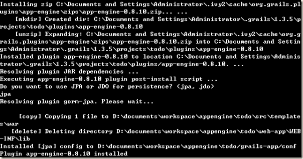
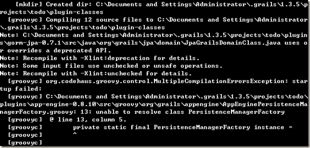

Grails 雖然在專案根目錄下的 application.properties 檔案中，儲存了專案的設定資料。但是諸如於專案開發、編譯期間所需要的 resource、script 及 template 等，甚至 plugin 及其說明文件，卻都不是儲存於專案目錄下，而是另外存放在 user home 底下。每個專案，依其專案名稱（於建立專案時，由 grails create-app 命令指定），皆有專屬目錄存放該專案的相關資源。
該目錄所在位置，在 user home 的 .grails\{grails 版本}\projects 下，譬如：
1 | C:\Documents and Settings\Administrator.grails\1.3.5\projects\{專案名稱} |
關於這一事實，有以下兩個問題必須加以關注：
專案備份問題
備份專案時，應考慮連同專案設定目錄一同備份
雖然 Grails 會在專案根目錄下的 application.properties 檔案中，設置 plugin 等專案相關設定資訊，譬如，以 Grails AppEngine plugin 為例，可以透過 grails install-plugin 命令安裝此 plugin：
1 | grails install-plugin app-engine |
安裝完成後，application.properties 檔案將包含下列資訊：
1 | appengine.persistence=jpa |
但是若前述專案的對應設定目錄不存在，譬如將專案移轉到新的電腦環境中，在建置或執行專案時，過程中將必須重新下載並安裝相關 plugin。也就是說，若於命令列首次以 grails compile 命令建置專案，或以 grails run-app 命令直接執行專案，因為此時 plugin 相關檔案尚不存在，因此，在建置過程中，Grails 將根據 application.properties 檔案中的設定， 重新下載、安裝 plugin。
這個過程，可能會遇到兩個意外。
首先，雖然在網路如此普及的現在，很少人會有此問題，但萬一碰巧此時電腦無法存取 Internet，將會立即遇到無法下載 plugin，無法建置專案的窘境。
另外，可能是 plugin 的 Gant 的寫法的問題（尚未深究），再以 Grails AppEngine plugin 為例，plugin 的下載、初始設定都沒遇到問題：

但當 plugin 設置完成後，要開始建置專案時，此時 plugin 似乎尚未能與專案設定充分連結：無法存取專案相關 classpath；或者可能是還未確實獲得正確的設定；導致執行 plugin 的建置過程中，發生 MultipleCompilationErrorsException: unable to resolve class xxx 等錯誤，而使專案建置失敗。（在這裡，還是以 Grails AppEngine plugin 為例，是找不到 JDO 的 PersistenceManagerFactory。）（沒錯，雖然選擇了 jpa，但是顯然 Grails AppEngine plugin 還是在專案中含入了 JDO 的相關檔案。）

雖然再次執行上述任一命令，即不再發生上述錯誤，但若是開發者未意識到此問題其實已於上述命令首次執行時已自動消失，而在看到錯誤的第一時間，即嘗試去解決問題，反而會找不到答案，徒增困擾。
若要驗證此問題，只需將 user home 裡的專案相關設定目錄刪除，然後重新建置專案，即可驗證。
總之，根據以上的實務經驗：
專案命名問題
建立新專案或欲手動修改既有專案名稱時，需注意在 user home 裡，是否已存在相同專案名稱的設定目錄。
這個問題其實相當困擾初學者，尤其是經常反覆建立、刪除測試用專案的時候。簡直是在懲罰積極（但可能不是很瞭解 Grails 專案設定）的初學者…。
最常見的情況，莫過於在開發了許多專案之後，難免會碰巧在不同目錄下，建立了相同名稱的專案；又或者，在專案初期，評估可行性時建立測試用專案，而將專案取名為 test 等常用名稱而導致名稱衝突。專案名稱一旦發生衝突，最常導致的結果，不外乎無法安裝 plugin （使用 install-plugin 安裝時無動作）、專案或是 plugin 的設定不正確等…，都是一些相當惱人的問題。
結論
以上兩個問題，雖然對有經驗的人來說，可能真的不算什麼，但對於初學者而言，很可能會是一個萬一不幸遇上時，抓破頭也找不出原因，成為一道無法跨過的門檻。若初學者因為這樣就放棄了 Grails，那真是太可惜了。或許，以『約定優於配置』的 Grails，實在應該將專案相關設定檔案，都放在專案目錄下才對。
歡迎大家的回饋與心得分享。